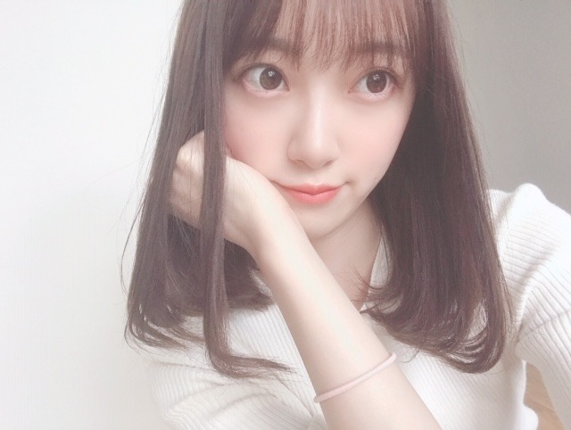
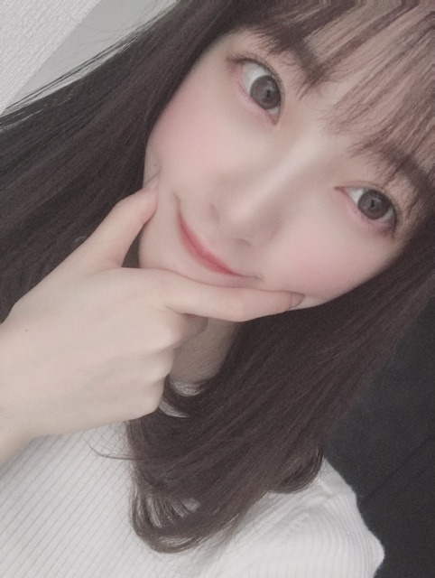
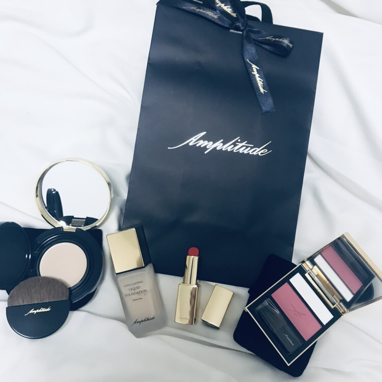
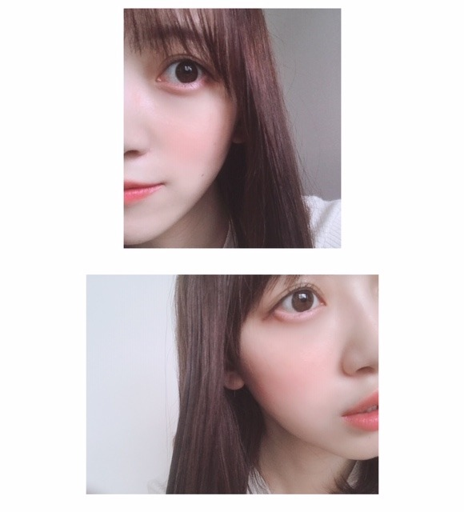

2019/0913Friスリッパはもこもこがいいな

秋ですね☺︎
みなさんは秋を感じることはありましたか？
もうすっかり涼しくて風が気持ちいいです
私の最近はですね、撮影や打ち合わせなどをしています~
早くお知らせしたいこともあるので楽しみに待っていてくださいね！
ほくほくとした食べ物食べたいなぁ

最近買ったもの☺︎
アイシャドウを買ってからハマっているamplitudeで
左から、トランスルーセントエマルジョンファンデーション00番、リキッドファンデーション00番、口紅10番オレンジ、コンスピキュアス チークス5番、を買いました〜❤︎

左のファンデーションはお直し用に買ったのですが意外とコンパクトで持ち歩きやすいし、質感がややクリーミーでこれからの季節メイクした上からこれを指や筆で重ねてもパサつかなそうで、ひとまず、ほっとしています。
リキッドファンデーションは、すうっと肌に馴染むのにカバー力もあるしつけた瞬間モチっとサラッとしてるから仕上げのお粉がいらなくて！
これからの季節、乾燥しちゃうからめちゃくちゃ頼りになります！！！
ツヤ感も出て上品なツヤ肌になれました
たまには季節でファンデを変えてみるのもアリかも☺︎

口紅10番は、深みのあるおしゃれなオレンジで一目惚れ！
つけてみたら嫌味のない柔らかい発色でじゅわっと甘顔になれました❤︎
口紅の香りがアールグレイの香りで唇はむはむ食べちゃいたくなるくらい良い匂いで美味しいから、かなりお気に入り☺︎
チークはわたしはブルベ夏だと思ってるので深みのあるピンクローズにしました！全然肌くすまないし、優しい顔になれます~
ハイライトも付いているのでハイライトを頬骨の高いところと頬の内側(目頭下から小鼻横まで)と唇のお山の上(人中)にささっと塗ってから
チークブラシでマルを描きながらチークをいれていきます☺︎
チークの入れ方で顔の印象や輪郭の見え方も変わるからチークブラシを入れる時はかなり気をつけてて、
わたしは立体感と柔らかさを出すために幅広くまるくチークをくるくるいれてます❤︎
ああ！腹筋しなきゃ！と思っても寝てしまう~
だれか起こして~ 笑
秋も眠いみたい。ずっとずっと眠い。
では
2019/09/13 16:36
コメント(283)
未央奈ちゃんありがとうございます‼昨日は見ました‼ありがとうございます‼楽しみにしてます‼気をつけて下さい！気をつけて下さい！
堀ちゃんと言えば、脇の体操1．2．3だよね!!!!!!
女の子向けのブログうれしい！！
参考になります(^^)
参考になります(^^)
ブログありがとう！
今日もかわいい～
コスメ紹介ほんとにうれしいです！
今日もかわいい～
コスメ紹介ほんとにうれしいです！
未央奈さん。お疲れ様です！
連日のブログ更新有り難き幸せ♪
未央奈のコスメリポート？ じいさん的にめっちゃ参考になりました♪ん。（な訳ないやろ！） この秋冬用に！未央奈セットを是非！(笑)
そうそう！ 「秋」と言えば、栗きんとん！ 今年も大阪でも目にする様に♪ もう少ししたら、中津川からお取り寄せしよっと♪（食欲の秋～♪）
毎週、レコメン楽しく拝聴しております！ 益々のご活躍を！
ほんじゃ♪(^_^)/
連日のブログ更新有り難き幸せ♪
未央奈のコスメリポート？ じいさん的にめっちゃ参考になりました♪ん。（な訳ないやろ！） この秋冬用に！未央奈セットを是非！(笑)
そうそう！ 「秋」と言えば、栗きんとん！ 今年も大阪でも目にする様に♪ もう少ししたら、中津川からお取り寄せしよっと♪（食欲の秋～♪）
毎週、レコメン楽しく拝聴しております！ 益々のご活躍を！
ほんじゃ♪(^_^)/
未央奈ちゃん更新ありがとー！
秋だねー。
スーパーで秋刀魚が並んでる姿を見て
秋を感じてるよ。
いやー、秋だねー。(二回目)
さておき、
未央奈ちゃん！これ以上可愛くなってどうするんですか？！
もうハートが限界です！
好きです！(≧∀≦)
そして言わせてください！
好きです！(二回目)
ではでは
今日も素敵な１日を。
秋だねー。
スーパーで秋刀魚が並んでる姿を見て
秋を感じてるよ。
いやー、秋だねー。(二回目)
さておき、
未央奈ちゃん！これ以上可愛くなってどうするんですか？！
もうハートが限界です！
好きです！(≧∀≦)
そして言わせてください！
好きです！(二回目)
ではでは
今日も素敵な１日を。
未央奈。
おはよう。今日も涼しいよ。
おはよう。今日も涼しいよ。
未央奈ほんとに可愛いです！
大好きな未央奈ちゃんおはよう ✨☀️早くお伝えしたい事ってなんだろうなぁ？セカンドソロ写真集発売決定☆！！なら嬉しいし、絶対買うよヽ(o´3`o)ﾉまたは、二度目の映画主演決定も嬉しい それとも、乃木坂世界旅で、シュワちゃんに会いに行くとか。もっともっと、色んな方に未央奈ちゃんの魅力を知ってもらいたいなあ。だって、まだ、会ったことはありませんが、テレビやラジオ雑誌などでも、凄く癒され、沢山元気をもらってるから。いつも本当にありがとう‼️3期生や4期生等の後輩への優しくアドバイスしたり、相談のってあげたり、泣いている後輩がいたら励ましてあげたりと、とても素敵な先輩であり、お姉さんですね‼️未央奈ちゃんや他の乃木坂メンバーから学んだ事を後輩に受け継いでいけたら、嬉しいですね‼️未央奈ちゃん本当に乃木坂46に加入してくれて、ありがとう‼️運営の方々未央奈ちゃんを合格させてくれてありがとう‼️一期生の方々、同期の2期生の方々、後輩、マネージャーさん等のスタッフさん、ファンの方々、未央奈ちゃんの家族、今まで未央奈ちゃんを支えてくれてありがとう‼️これからも未央奈ちゃんはじめ、乃木坂46メンバーをずっと応援しましょう‼️大好きやおー
堀ちゃん、おはよう。
うん、眠い(ｐωー)
朝起きるときは、「・・あぁ、朝か。起きなければ。よっこらせ。」という感じの気持ちでは起きられない。
起きるときは、「・・・うぉぉぉりゃぁぁぁ！！！！」っていう感じで一気に掛布団を蹴りやって起きるのさ
そして布団から出たら、頭の中でアントニオ猪木さんの『Inoki Bom-Ba-Ye』のBGMを流して眠気と闘うL(｀ロ´)ノ
うん、眠い(ｐωー)
朝起きるときは、「・・あぁ、朝か。起きなければ。よっこらせ。」という感じの気持ちでは起きられない。
起きるときは、「・・・うぉぉぉりゃぁぁぁ！！！！」っていう感じで一気に掛布団を蹴りやって起きるのさ
そして布団から出たら、頭の中でアントニオ猪木さんの『Inoki Bom-Ba-Ye』のBGMを流して眠気と闘うL(｀ロ´)ノ
堀ちゃん！！ 世間では、敬老の日を含めて 3連休だ！！
※アラ還って、敬老に該当するのかな！？
織田信長の時代には 人生50年と言ってたけど、
今は 人生100年時代！！
━━━━━━━━━━━━━━━━━━━━━━━━━
24節気は 白露だよ！！ 次には 秋分。
秋分の日と言えば、お墓参りだけど、
僕は 彼岸花だね！！ ※曼珠沙華。
夏の疲れも有るし、体調管理して お元気でね。 (@^^)/~~~
※アラ還って、敬老に該当するのかな！？
織田信長の時代には 人生50年と言ってたけど、
今は 人生100年時代！！
━━━━━━━━━━━━━━━━━━━━━━━━━
24節気は 白露だよ！！ 次には 秋分。
秋分の日と言えば、お墓参りだけど、
僕は 彼岸花だね！！ ※曼珠沙華。
夏の疲れも有るし、体調管理して お元気でね。 (@^^)/~~~
堀ちゃんと言えば、耳をすませば、高速まばたきですね!!
腹筋しなきゃ！
と思っても寝てしまうー
だれか起こして～って
自分の腹筋で起きて～ 笑


と思っても寝てしまうー
だれか起こして～って
自分の腹筋で起きて～ 笑
こんにちは～
、、もう、、朝は、すっかり、、秋みたいだね～
、、タイトル、、スリッパは、、ももこ、、がいい、(笑)、、ってことかと、、思った、、ね～(笑)
、、じゃあ、、またね～
、、もう、、朝は、すっかり、、秋みたいだね～
、、タイトル、、スリッパは、、ももこ、、がいい、(笑)、、ってことかと、、思った、、ね～(笑)
、、じゃあ、、またね～
デ
コ
出
し
カ
ワ
エ
エ
ヱ
！
！
！
！
！
コ
出
し
カ
ワ
エ
エ
ヱ
！
！
！
！
！
こんにちは‼︎
ブログ更新、ありがとうございます♪
昨日ぐらいから、急に涼しくなりましたね〜
風が爽やかで気持ちがいいです♪
朝晩涼しいので、眠い時は寝て、腹筋は朝やりましょう‼︎
朝軽く汗をかく運動をすると、頭も体も覚醒して1日快適に過ごせるようですよ♪
自分が秋を感じるのは、スポーツをしている時かな。
思う存分体を動かせるのが嬉しい‼︎
猛暑日にスポーツをやる際は、『これ以上やり過ぎると危険かな』なんて考えながら、ある程度体力をセーブしつつ体を動かす必要があって。
終わった後も、なんとも言えない独特の疲れが残ったりとか。
その点、涼しくなってくると、思う存分体を動かすことができて、終わった後もなんか気持ちがいい‼︎
やっぱり、スポーツの秋ですね♪
あ、それと、寝る時にベッドに入ってきた猫の温かさが『気持ちいい』と思えることも、秋を感じるなあ(笑)。
というか、熱帯夜はあいつも寄り添ってきません。
きっと向こうも暑いんだと思います(笑)。
やっと涼しくなってきたと思ったけど、気がついたら、もう十五夜お月様。
そのうちハロウィンがやってきて、クリスマスがやってきて、紅白歌合戦がやってきて。
2019年が終わってしまう(笑)。
夏はまた巡ってくるけど、その時は1つ歳を取っているんですもんね。
同じことの繰り返しのようでいて、実は確実に時間は流れている。
1日1日、大切に生きないといけないですね…‼︎
引き続き忙しくしているようですが、くれぐれも体調には気をつけて。
嬉しいお知らせも、解禁になるのを心待ちにしています‼︎
楽しみ楽しみ♪
ではでは、また。
今日も未央奈にとっていい1日になりますように♪
P.S 最後に載せてくれている写真、友達と映画を観に行った時のものかな？
場所はどこだろう。
TOHOシネマズの近くにも見えるけど…
オトナ可愛いファッションと、洗練された雰囲気の街並みがとても合ってますね‼︎
ブログ更新、ありがとうございます♪
昨日ぐらいから、急に涼しくなりましたね〜
風が爽やかで気持ちがいいです♪
朝晩涼しいので、眠い時は寝て、腹筋は朝やりましょう‼︎
朝軽く汗をかく運動をすると、頭も体も覚醒して1日快適に過ごせるようですよ♪
自分が秋を感じるのは、スポーツをしている時かな。
思う存分体を動かせるのが嬉しい‼︎
猛暑日にスポーツをやる際は、『これ以上やり過ぎると危険かな』なんて考えながら、ある程度体力をセーブしつつ体を動かす必要があって。
終わった後も、なんとも言えない独特の疲れが残ったりとか。
その点、涼しくなってくると、思う存分体を動かすことができて、終わった後もなんか気持ちがいい‼︎
やっぱり、スポーツの秋ですね♪
あ、それと、寝る時にベッドに入ってきた猫の温かさが『気持ちいい』と思えることも、秋を感じるなあ(笑)。
というか、熱帯夜はあいつも寄り添ってきません。
きっと向こうも暑いんだと思います(笑)。
やっと涼しくなってきたと思ったけど、気がついたら、もう十五夜お月様。
そのうちハロウィンがやってきて、クリスマスがやってきて、紅白歌合戦がやってきて。
2019年が終わってしまう(笑)。
夏はまた巡ってくるけど、その時は1つ歳を取っているんですもんね。
同じことの繰り返しのようでいて、実は確実に時間は流れている。
1日1日、大切に生きないといけないですね…‼︎
引き続き忙しくしているようですが、くれぐれも体調には気をつけて。
嬉しいお知らせも、解禁になるのを心待ちにしています‼︎
楽しみ楽しみ♪
ではでは、また。
今日も未央奈にとっていい1日になりますように♪
P.S 最後に載せてくれている写真、友達と映画を観に行った時のものかな？
場所はどこだろう。
TOHOシネマズの近くにも見えるけど…
オトナ可愛いファッションと、洗練された雰囲気の街並みがとても合ってますね‼︎
未央奈ちゃん
美しーーー！！！
美しーーー！！！
メイク用品紹介してくれてありがとう〜‼
かわいい
大好き
かわいい
大好き
ブログ更新ありがとうございます！
私もいつも腹筋しなきゃと思って寝落ちしてしまうことがしょっちゅうあるので、みおなちゃんと一緒だと思うと嬉しい！けど、みおなちゃんはすごく痩せていてスタイルがいいから尊敬します。
メイクも、季節によって悩みとかも違うと思うし、テーマとか変えるだけで、すごく変わると思うから、みおなちゃんを参考に勉強していこうと思います！
今日もみおなちゃんが大好きです！！！！
私もいつも腹筋しなきゃと思って寝落ちしてしまうことがしょっちゅうあるので、みおなちゃんと一緒だと思うと嬉しい！けど、みおなちゃんはすごく痩せていてスタイルがいいから尊敬します。
メイクも、季節によって悩みとかも違うと思うし、テーマとか変えるだけで、すごく変わると思うから、みおなちゃんを参考に勉強していこうと思います！
今日もみおなちゃんが大好きです！！！！
堀ちゃんブログ更新ありがとう。
メイクの写真、めっちゃ可愛いかったよ。
大人の女性って感じが伝わってきました。
口紅のオレンジ、堀ちゃんにぴったりの色だよ。
スリッパはもこもこだと温かいし落ち着くよね。
睡魔に負けず腹筋頑張って。
次のブログ楽しみに待ってます。
メイクの写真、めっちゃ可愛いかったよ。
大人の女性って感じが伝わってきました。
口紅のオレンジ、堀ちゃんにぴったりの色だよ。
スリッパはもこもこだと温かいし落ち着くよね。
睡魔に負けず腹筋頑張って。
次のブログ楽しみに待ってます。
オーラ未央奈(･∀･∩)
ディズニー“リメンバーミー“終盤泣けるやばいーまさかの展開やばい泣けるやばい(/_;)(未央奈:何がﾔﾊﾞｲﾉﾖ!!!←)
“ワンピスタンピード？“観てきたよ＼(^o^)／
元ゴールドロジャーの船員で、インペルダウンに幽閉されてたボス(名前忘れた。笑)つぇぇぇ！
アニメの最初のopとEDが流れたのが嬉しかった。笑
用事あるから急ぎで書いた。笑
がんばみおなー
ディズニー“リメンバーミー“終盤泣けるやばいーまさかの展開やばい泣けるやばい(/_;)(未央奈:何がﾔﾊﾞｲﾉﾖ!!!←)
“ワンピスタンピード？“観てきたよ＼(^o^)／
元ゴールドロジャーの船員で、インペルダウンに幽閉されてたボス(名前忘れた。笑)つぇぇぇ！
アニメの最初のopとEDが流れたのが嬉しかった。笑
用事あるから急ぎで書いた。笑
がんばみおなー
参考になりました‼️
特にチークや口紅お直しのファンデーション‼️
わたしもそのブランドの化粧品買ってみようかな。
でも予想すると高そう
化粧私は何使ってますか？
もしかしたら前と同じ質問私してるかも
特にチークや口紅お直しのファンデーション‼️
わたしもそのブランドの化粧品買ってみようかな。
でも予想すると高そう
化粧私は何使ってますか？
もしかしたら前と同じ質問私してるかも
未央奈ちゃんこんばんはー！
ブログ更新ありがとーう！！
すっかり秋がやってきたって感じで涼しくていいよね〜
そして秋ってお洋服も着たいやつも買いたいやつもたくさんだよね
男だからそこまで化粧品って詳しくないけれど未央奈のブログ見て日々勉強できるなーと化粧品の話が出てくる度に思う笑
何よりそれを使っての自撮りがかわいくて萌えてしまう
さて、たくさん撮影とか打ち合わせがあるとの事で発表が楽しみだな〜、待ってるねーー！！
眠さに負けず腹筋がんばろう！
足のツボとか押したら眠気飛ぶよ！
では
ブログ更新ありがとーう！！
すっかり秋がやってきたって感じで涼しくていいよね〜
そして秋ってお洋服も着たいやつも買いたいやつもたくさんだよね
男だからそこまで化粧品って詳しくないけれど未央奈のブログ見て日々勉強できるなーと化粧品の話が出てくる度に思う笑
何よりそれを使っての自撮りがかわいくて萌えてしまう
さて、たくさん撮影とか打ち合わせがあるとの事で発表が楽しみだな〜、待ってるねーー！！
眠さに負けず腹筋がんばろう！
足のツボとか押したら眠気飛ぶよ！
では
未央奈ちゃん。ブログありがとう！モコモコのスリッパこれから、寒くなると活躍するので、暖かそうでいいですね。チーク色っぽくていいです。
未央奈さんブログ更新ありがとうございます。いつもオシャレですね。僕がもし女性に生まれ変わるなら怜奈さんに生まれ変わる。そしたら同じ２期生だから未央奈さんと絢音さんと新内さんとかと仲良しになるよ。いつも以上に可愛い❤️。今日はメールありがとうございました。
秋ですね～！
今日の朝は寒かったね。東京は20℃を下回ったらしく日中も少し寒かったよね？
昨日は中秋の名月だったんだけど東京は残念ながら見れなかったもんな
今日の朝は寒かったね。東京は20℃を下回ったらしく日中も少し寒かったよね？
昨日は中秋の名月だったんだけど東京は残念ながら見れなかったもんな
みおちゃんブログ更新ありがとう～
みおちゃんのツヤ肌系メイク憧れてるからメイク紹介とっても嬉しい！
今キラキラしてて、でも粉飛びしないツヤっと仕上がるアイシャドウを探しているので、もしおすすめのものがあったら教えてください。
みおちゃんのツヤ肌系メイク憧れてるからメイク紹介とっても嬉しい！
今キラキラしてて、でも粉飛びしないツヤっと仕上がるアイシャドウを探しているので、もしおすすめのものがあったら教えてください。
ブログ更新ありがとう！！
最近はツクツクボウシの声が聞こえてきて秋を感じることが多いな！雨も多いし…気をつけないとね
オレンジの口紅似合ってるなー！
またこんな感じのブログ更新して欲しいなー！
またね
最近はツクツクボウシの声が聞こえてきて秋を感じることが多いな！雨も多いし…気をつけないとね
オレンジの口紅似合ってるなー！
またこんな感じのブログ更新して欲しいなー！
またね
みおなさん、こんばんたん。
このブログ読んで「秋」を感じました。
写真のトーンがそうだし、なんちゃらコスメも
秋なんでしょう?
いまね。
6thバスラの銀盤が届き見ています。
みなさんいつもの雨の中元気元気⸜( •⌄• )⸝
これ何回も見て、ほっしやんやらんぜらんぜ
ジーーッ|ω･`)ｺｿ こんな感じで←(怖いー)
ぢつは。
29年間毎日かかさない琴があります。
被災の日もどんな日も。。
それは場所はかわってもNETへの「書き込み」だよ!
わし内気なもんでここなら何でも書ける。
でもちゃんと根拠のある琴ばかりです。
内気ゆえ接客業について
なんとか人と交流はできても
晩年ストレスで病んだははは←()
全員が外交的なら世の中うるさすぎるぞ
堀さんも楽屋の窓辺に座り
ハーレクインロマンス読みながら
9月の雨だれをみつつ
ポロッて涙したりするよね?←(願望なのね?)
きゃーー可愛いのおおぉぉぉぉぉお
内気はいいぞーー⸜( •⌄• )⸝
人には見えないものが見えて聞こえて
いろいろ思慮深くなる!!!
いろんなものみてチャージして
自分なりに考え答えをだして
判断したり発言できる
これが本当の「かしこい」
ただ。。
みおな氏はアーティストだからね!!!!!
内なる宇宙にあるものを
表に出せたら素晴らしいものになると思います。
ホットギミック ガールミーツボーイ
なんとかして見ます!!!!!
ただ今は女優になりたいって決めず
そういう事を中心に「なにかしたい」
そんな感触を常に感じられていたら
良きかと思いました。
なおこのコメントは読まれたら
10秒後に消え去ります←(あらっ)
じゃねーーー
このブログ読んで「秋」を感じました。
写真のトーンがそうだし、なんちゃらコスメも
秋なんでしょう?
いまね。
6thバスラの銀盤が届き見ています。
みなさんいつもの雨の中元気元気⸜( •⌄• )⸝
これ何回も見て、ほっしやんやらんぜらんぜ
ジーーッ|ω･`)ｺｿ こんな感じで←(怖いー)
ぢつは。
29年間毎日かかさない琴があります。
被災の日もどんな日も。。
それは場所はかわってもNETへの「書き込み」だよ!
わし内気なもんでここなら何でも書ける。
でもちゃんと根拠のある琴ばかりです。
内気ゆえ接客業について
なんとか人と交流はできても
晩年ストレスで病んだははは←()
全員が外交的なら世の中うるさすぎるぞ
堀さんも楽屋の窓辺に座り
ハーレクインロマンス読みながら
9月の雨だれをみつつ
ポロッて涙したりするよね?←(願望なのね?)
きゃーー可愛いのおおぉぉぉぉぉお
内気はいいぞーー⸜( •⌄• )⸝
人には見えないものが見えて聞こえて
いろいろ思慮深くなる!!!
いろんなものみてチャージして
自分なりに考え答えをだして
判断したり発言できる
これが本当の「かしこい」
ただ。。
みおな氏はアーティストだからね!!!!!
内なる宇宙にあるものを
表に出せたら素晴らしいものになると思います。
ホットギミック ガールミーツボーイ
なんとかして見ます!!!!!
ただ今は女優になりたいって決めず
そういう事を中心に「なにかしたい」
そんな感触を常に感じられていたら
良きかと思いました。
なおこのコメントは読まれたら
10秒後に消え去ります←(あらっ)
じゃねーーー
こんばんは！
確かに秋の風になってきているね
秋は焼き芋食べたくなるなぁ
写真見た時に、チークの色味が個人的に好きだなぁって思った
チークだけでも、たくさんの行程があるんだね
今日は腹筋するのかな？
頑張ってね～
では！
確かに秋の風になってきているね
秋は焼き芋食べたくなるなぁ
写真見た時に、チークの色味が個人的に好きだなぁって思った
チークだけでも、たくさんの行程があるんだね
今日は腹筋するのかな？
頑張ってね～
では！
堀ちゃん、ブログ更新ありがとう〜
大好きだよー
大好きだよー
未央奈ちゃんブログありがとう！
お知らせ楽しみ！
私が未央奈ちゃんのこと、起こしてあげる！！
では！笑
お知らせ楽しみ！
私が未央奈ちゃんのこと、起こしてあげる！！
では！笑
チャァオ～～!☆彡
え❕❔
腹筋❕❔笑顔
いやいや❕笑顔・・
みおちゃん❕・・・・
おポンポンは、そのままでいいですよぉ～～❕❤️❤️❤️❤️❤️笑顔
だだ日常～～～⤴️⤴️
いつもぉ～～～～⤴️⤴️
お腹と背中がくっつくくらいで、ひっこめていればいい～～ですよぉ～～❕❤️❤️❤️❤️❤️笑顔
体のバランスも良くなりますし～～～⤴️⤴️
まさに、体幹です❕❤️❤️❤️❤️❤️笑顔
あとぉ～～～～⤴️⤴️
全然、オススメしませんがぁ～～⤴️⤴️
ねっころがりながら、テレビを見ているとき～～～～⤴️⤴️
自分で、めぇ～～いっぱい腹パンチかチョップをしてぇ～～⤴️⤴️
腹筋作るのもありますがぁ～～⤴️⤴️
たぶん、具合が悪くなりますから～～⤴️⤴️
女の子は、絶対やらないでねぇ❕❤️❤️❤️❤️❤️笑顔
それでは、みおちゃんまたねぇ❕❤️❤️❤️❤️❤️笑顔
(*^▽^)/★*☆♪❤️❤️❤️
☆会津＊ONEより☆彡
未
央
奈
ち
ゃ
ん
、
大
好
き
で
す

央
奈
ち
ゃ
ん
、
大
好
き
で
す
スキンケアはどうやってるのか教えて〜
知りたーい
知りたーい
季節によって、メイクも変わる。
メイクによって、顔の雰囲気も変わる。
顔の雰囲気によって、人の印象も変わる
人の印象によって、気持ちも変わる。
面白いですね。
安定感と新鮮さのバランスを保てる人。
これは一つの秘訣かな。
メイクによって、顔の雰囲気も変わる。
顔の雰囲気によって、人の印象も変わる
人の印象によって、気持ちも変わる。
面白いですね。
安定感と新鮮さのバランスを保てる人。
これは一つの秘訣かな。
ブログ更新ありがとう！！
この前載せたブラウンネイル私も塗ったよ！フットネイルも参考にしたいからのせてほしいな〜〜〜
この前載せたブラウンネイル私も塗ったよ！フットネイルも参考にしたいからのせてほしいな〜〜〜
温度差が激しくて困るね(>д<*)
未央奈さんお美しいです(*゜▽゜)笑
未央奈さんお美しいです(*゜▽゜)笑
未央奈ちゃん、ひろっしーです！コメント投稿609回目です！
前回はブログ「晴れましたね」にブログの感想を書きました！
時間→「No.300 2019年9月 3日 01:37」
いつもブログ更新ありがとうございます！
また1～2週間経ってた・・・(謝) 早すぎ～！
神宮ライブが終わって2週間が経ちましたね！今回で6年連続の神宮ライブ、今回は4期生の初参加に加え、キャプテン玲香ちゃんのラストライブ！乃木坂の歴史にまた新たな1ページが刻まれたような、そんなライブに思いました！
「乃木中」でバナナマンさんが潜入された時もライブのセットやリハ姿のメンバーが見れたり楽屋でリラックスしながら楽しんで過ごされている様子が見れたりスッピンが見れたりレアなメンバーの姿が見れて凄く嬉しかったです！
玲香ちゃんの笑顔、見れて良かったですね(嬉)
卒業は寂しいですけど、これからまなったんが新キャプテンの新たな乃木坂が見れると思うと凄く楽しみです！そして、僕も来世も来来世も乃木坂を応援出来たら良いな～と思いました！
今回の写真(いつもそうですが、特に)めっちゃ可愛いですね！でも、ただ可愛いだけじゃなく綺麗で美しい大人の女性に見えました！今回は特に写真を見るたび見とれてしまいました(笑)
お知らせ楽しみにしてますね～！
僕も腹筋全然してません(笑) 一緒ですね(笑)
今日のモバメの写真も美しいですね！目を閉じてても美しい！ちょっと寝顔を見れた気分ってコラコラ！お願いだから引かないでくれ～(頼)
っていうか2週間で10kg痩せたダンスって何？
ここまで読んで頂きありがとうございました！
毎日お仕事お疲れ様です！体調にはくれぐれも気を付けて頑張ってくださいね！
おやすみおな～！
前回はブログ「晴れましたね」にブログの感想を書きました！
時間→「No.300 2019年9月 3日 01:37」
いつもブログ更新ありがとうございます！
また1～2週間経ってた・・・(謝) 早すぎ～！
神宮ライブが終わって2週間が経ちましたね！今回で6年連続の神宮ライブ、今回は4期生の初参加に加え、キャプテン玲香ちゃんのラストライブ！乃木坂の歴史にまた新たな1ページが刻まれたような、そんなライブに思いました！
「乃木中」でバナナマンさんが潜入された時もライブのセットやリハ姿のメンバーが見れたり楽屋でリラックスしながら楽しんで過ごされている様子が見れたりスッピンが見れたりレアなメンバーの姿が見れて凄く嬉しかったです！
玲香ちゃんの笑顔、見れて良かったですね(嬉)
卒業は寂しいですけど、これからまなったんが新キャプテンの新たな乃木坂が見れると思うと凄く楽しみです！そして、僕も来世も来来世も乃木坂を応援出来たら良いな～と思いました！
今回の写真(いつもそうですが、特に)めっちゃ可愛いですね！でも、ただ可愛いだけじゃなく綺麗で美しい大人の女性に見えました！今回は特に写真を見るたび見とれてしまいました(笑)
お知らせ楽しみにしてますね～！
僕も腹筋全然してません(笑) 一緒ですね(笑)
今日のモバメの写真も美しいですね！目を閉じてても美しい！ちょっと寝顔を見れた気分ってコラコラ！お願いだから引かないでくれ～(頼)
っていうか2週間で10kg痩せたダンスって何？
ここまで読んで頂きありがとうございました！
毎日お仕事お疲れ様です！体調にはくれぐれも気を付けて頑張ってくださいね！
おやすみおな～！
すき
ブログ更新本当にありがとう☆〃可愛すぎるよ(*^^*)本当に☆秋を感じたのはやっぱり外が涼しくなってきた所だよ(*>д<)オレが起こしたいです(>_<")未央奈大好き☆〃
堀ちゃんこんばんは！
もう秋ですね〜、天気が良くても涼しさを感じるのが心地いいです(o^^o)♩
夕方とかに空を見上げると、陽が沈むのが早くなったなぁと秋をふと感じますね( ´ ▽ ` )
今日は月が凄く綺麗で、お月見の季節だなぁとも(^^)
あとは僕の中での話ですが、季節の変わり目で油断したのか喉風邪をひいてしまったのも秋を感じた１つです( ´ 〜 ` )笑
久々にガッツリ寝込んでしまって、貴重な3連休が〜(>_<)
でも休みの日に家でゆっくりするのも最近中々なくて、乃木坂のDVDをボーッと観ながら過ごす時間もいいなぁと( ´ ▽ ` )笑
最近は髪の伸びた堀ちゃんにずっと目を奪われていましたが、過去の映像を見るとやっぱりショートもめっちゃ可愛いなぁ〜と釘付け(o^^o)
と、思いながら普通にテレビを見始めるとバイトルのCMで堀ちゃんが！！( ´ ▽ ` )
ハーフアップめっちゃ可愛いです〜、可愛い堀ちゃんのハーフアップの中でも、バイトルでのハーフアップはなんだかめちゃくちゃ可愛いと感じました！！(o^^o)
帽子被ってのハーフアップもめちゃんこ可愛いです、一緒にキャッチボールしたい！笑
可愛い堀ちゃんがたくさん見られて僕は幸せだなぁ、逆に風邪ひいてこんな時間を過ごせてよかったかもしれない( ´ ▽ ` )笑
咳で中々寝られないので明日もまだ万全にはならなそう、だから明日もたくさん堀ちゃんに癒してもらいます！(o^^o)笑
堀ちゃんからのお知らせも楽しみだな〜、一日千秋の想いで待ってますね( ´ ▽ ` )♩
では、堀ちゃんを見習って梅干し食べながら風邪治したいと思います、気温差が出てくるので堀ちゃんも風邪にはお気をつけください！(説得力ないですが)
またコメントさせてください(o^^o)
もう秋ですね〜、天気が良くても涼しさを感じるのが心地いいです(o^^o)♩
夕方とかに空を見上げると、陽が沈むのが早くなったなぁと秋をふと感じますね( ´ ▽ ` )
今日は月が凄く綺麗で、お月見の季節だなぁとも(^^)
あとは僕の中での話ですが、季節の変わり目で油断したのか喉風邪をひいてしまったのも秋を感じた１つです( ´ 〜 ` )笑
久々にガッツリ寝込んでしまって、貴重な3連休が〜(>_<)
でも休みの日に家でゆっくりするのも最近中々なくて、乃木坂のDVDをボーッと観ながら過ごす時間もいいなぁと( ´ ▽ ` )笑
最近は髪の伸びた堀ちゃんにずっと目を奪われていましたが、過去の映像を見るとやっぱりショートもめっちゃ可愛いなぁ〜と釘付け(o^^o)
と、思いながら普通にテレビを見始めるとバイトルのCMで堀ちゃんが！！( ´ ▽ ` )
ハーフアップめっちゃ可愛いです〜、可愛い堀ちゃんのハーフアップの中でも、バイトルでのハーフアップはなんだかめちゃくちゃ可愛いと感じました！！(o^^o)
帽子被ってのハーフアップもめちゃんこ可愛いです、一緒にキャッチボールしたい！笑
可愛い堀ちゃんがたくさん見られて僕は幸せだなぁ、逆に風邪ひいてこんな時間を過ごせてよかったかもしれない( ´ ▽ ` )笑
咳で中々寝られないので明日もまだ万全にはならなそう、だから明日もたくさん堀ちゃんに癒してもらいます！(o^^o)笑
堀ちゃんからのお知らせも楽しみだな〜、一日千秋の想いで待ってますね( ´ ▽ ` )♩
では、堀ちゃんを見習って梅干し食べながら風邪治したいと思います、気温差が出てくるので堀ちゃんも風邪にはお気をつけください！(説得力ないですが)
またコメントさせてください(o^^o)
未央奈さんブログ更新ありがとうございます。昨日のメールありがとう 。推しメン僕は乃木坂46さん好きだよ。その中で未央奈さんが一番可愛いです。オシャレなところ乃木中で未央奈さんがすっぴんでも可愛いですよ。今年は神宮晴れ☀️て良かったですね。毎年雨だから心配してました。上海も頑張って✊ ✊。日本に住んでる台湾人です。中国語通訳してあげたい。写真どれも素敵です。誕生日もうすぐだね。
お知らせ何やろ？気になるなー(ฅ´ω`ฅ)
韓国のモデルさんみたいで超可愛い！この体型で食いしん坊なのが信じられない！
いつもブログ更新ありがとう！
最近は朝と夜はずいぶんと涼しくなりましたね！
秋が近づいてきてますね！
ほくほくのイモとか食べたい！笑
写メもすごい可愛いけど
睡魔に負けちゃう未央奈ちゃんも可愛いね！笑
ちょっとしたエピソードも私の癒しです笑
未央奈ちゃんの新しいお知らせも待ってますね！
寒暖の差が激しいので、お身体に十分に気をつけてくださいね！
いつも応援してます！頑張って下さいね！
最近は朝と夜はずいぶんと涼しくなりましたね！
秋が近づいてきてますね！
ほくほくのイモとか食べたい！笑
写メもすごい可愛いけど
睡魔に負けちゃう未央奈ちゃんも可愛いね！笑
ちょっとしたエピソードも私の癒しです笑
未央奈ちゃんの新しいお知らせも待ってますね！
寒暖の差が激しいので、お身体に十分に気をつけてくださいね！
いつも応援してます！頑張って下さいね！
未央奈ブログ更新ありがとうございます！
眠いときは寝ながら腹筋するのがおススメです！笑
体調に気をつけてお仕事頑張ってください！
眠いときは寝ながら腹筋するのがおススメです！笑
体調に気をつけてお仕事頑張ってください！
最近、秋の季節もちょっとづつ感じられるようになったよ。この寒暖差にやられないように身体に気をつけつつ
頑張ろうね。
頑張ろうね。
かわいいもきれいも兼ね備えてる堀ちゃん最高です☺️お直し用ファンデーションいいですね！チェックします✨


更新ありがとうございます。
秋と言えば仮面ライダーの移り変わりです。よければ特撮も見てください。
アルトでナイト～。
仮面ライダーゼロワンより